サンマリノのクリームたっぷりメロンパン。
2024/05/04
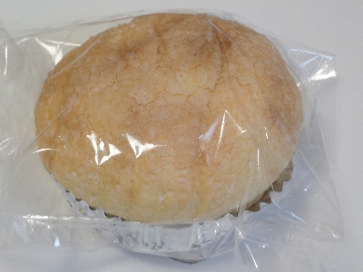
カップに入ったメロンパンです。上側は普通にメロンパンで、中心部の空洞にクリームが入っていました。
シュークリームみたいなメロンパンで、メロンパンとシュークリームそれぞれの味が楽しめました。
島根県出雲市斐川町上直江3321
2024/05/04

カップに入ったメロンパンです。上側は普通にメロンパンで、中心部の空洞にクリームが入っていました。
シュークリームみたいなメロンパンで、メロンパンとシュークリームそれぞれの味が楽しめました。
2023/03/25
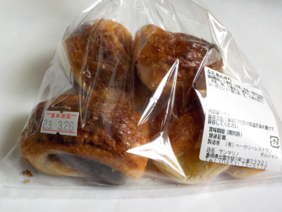
サンマリノ斐川店で小さいデニッシュあんぱんのセットを買いました。
小倉あんと栗アンが2個づつ入っています。
どっちの味も美味しかったです。
2017/03/25
ボローニャって意味がよく分からないです。 イタリアンデニッシュをボローニャっていうのかな？ 京都・祇園発祥の【ボローニャ】公式通販サイトってとこでは、ボローニャとは？ってコーナーで京都祇園発祥のデニッシュパンで書いてありました。何故京都のパンがイタリアの地名なの？説明になってないですよね。
京都祇園ボロニヤでは元祖デニッシュ食パンって書いてあるのは分かりましたが、店名の由来がみつけられなかったです。
なんかボローニャとかボロニアとか名前なんてどうでもいいのかな？意味ないのかな？
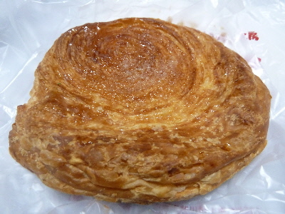
サンマリノさんのボローニャは、サクサクデニッシュのパンでした。
塩とバターが聞いてて、塩デニュッシュパンっぽかったです。美味しかったです。
2017/02/14
小さいサイズのドラえもんっぽいパンです。
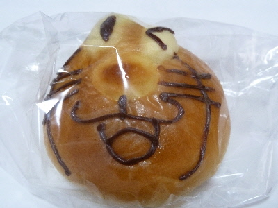
なんか楽しそうな顔でいいですね。
中はチョコレートが入っていました。
バレンタインにいいかも。
2014/05/18
「地元のお米を使ったお米パン」はよく聞きますが、お米の品種が貼ってあるパンは初めて見たかも。
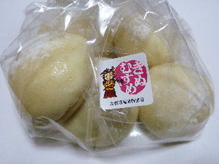
きぬむすめ使用です。
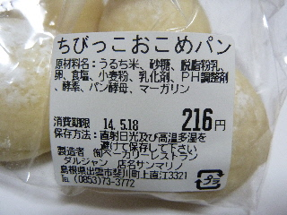
小さいパンのセットで「ちびっこおこめぱん」って名前の商品です。
お米感が少な目な感じがしました。
ふんわりとしてて、少し甘いパンです。お米と小麦の配合がいいのかな？
お米パンって、やっぱりお米の品種が違ったら味が違うのかな？
同じ商品で、きぬむすめ、コシヒカリ、つや姫って比べれたら面白そうって思いました。
2014/01/21
サンマリノ（出雲市斐川町）の焼き菓子セットの中に入っていたオレンジのクッキーです。
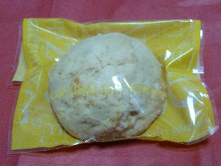
ゴツゴツ固いクッキーでした。
こうゆうのってちょっと好きかも。味わい深くていいです。
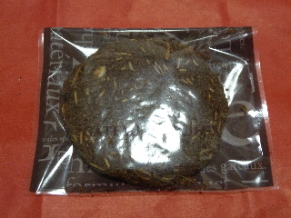
こっちはココアクッキーです。
こうゆうのってよくありますよね。
2013/01/05
斐川町のサンマリノさんに行ったら、駐車場も店内もお客さんでいっぱいでした。
大人気です。
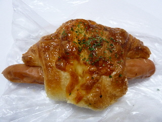
クロワッサンにウインナーが入ったパンを買いました。
パンのテリがなんか美味しそうです。
砂糖味の甘いクロワッサンの中には、沢山のマヨネーズとウインナーが入っていました。
ちょと複雑で、濃い味のお惣菜パンでした。
2010/08/16
メロンパンなので甘いかな？と思ったんですが、そんなに甘くはなかったです。
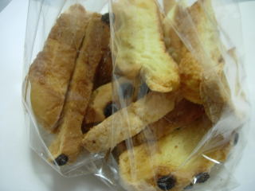
甘いのはクッキーの部分だけで、他のとことは薄味のラスクでした。
考えてみればメロンパンってクッキーのところ以外はあんまり味ないですもんね。
クッキーがコンガリ焼けて、よりクッキーらしくなってました。
コーヒーとチョコチップのパンは好きな味でした。
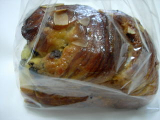
コーヒー味がするパンにチョコチップが入ってます。ちょっとネチャっとしますが、甘くて美味しかったです。コーヒーとパンとチョコとの相性がバッチリでした。
2010/08/16
ここにもあったんですね。冷やして食べるパン。
アンパンとクリームパンがあったんですけど、アンパンをチョイスしました。
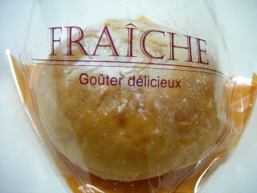
包装がちょっとオシャレでした。
あんぱんにクリームが入っていて、クリーム大福っぽい感じがしました。
パンなので、そんなにヒンヤリ感はなかったですが、次はクリームパンも食べてみたいって思いました。
2010/01/15
サンマリノのあんパンマン風のチョコパンです。
ちょっと小さめのパンです。
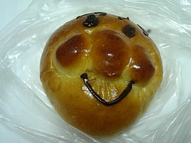
でもこれって、面白い顔ですね。子供が見たら何て言うんだろう？
話の種にどうぞって思いました。
たまたまこのパンだけ特別面白いだけだったのかもしれませんけど。
2008/05/31
5/31と6/1は5周年記念とゆうことで、1000円以上お買い上げ先着150名には800円相当のお菓子プレゼントがあったり、10％の割引券がもらえたり、記念価格でお安く商品が買えるってイベントをやってました。
とってもお得な企画ですね。普段900円するロールケーキを600円で買い、アンパンとソーセージパンを50円引きで買い、他にもちょこちょこ買って1000円越えてプレゼントを貰って帰りました。
こうゆうイベントは毎年あると嬉しいですね。来年もこの季節になったサンマリノをチェックしようって思いました。
クッキーシューを買ったんですが、大きいですね。
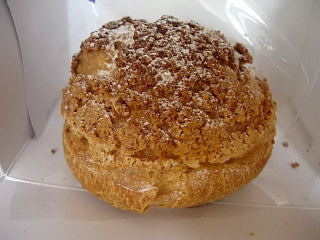
大きいので当然クッキー部分も多く食べ応えがあるんですが、でも何だか今時のクッキーシューって感じの味ではなく、昔ながらのシュークリームの味がしました。
クッキーの味よりも、なつかしい感じのするクリーム味がとても強かったので、昔風かな？って思いました。
あんぱんもなつかしい味わいで、「あ、この味久々かも？、最近こうゆうタイプのあんぱん食べてなかったな～。」って思いました。
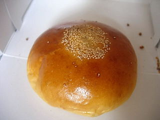
今日はなんだかいい意味で、ノスタルジックな気分が味わえました。
2008/03/09
コンガリとカリカリに揚げてあるカレーパンですね。
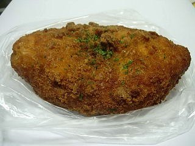
勇（いさみ）カレーって変わった名前の商品です。
カレーが多く入っていたので、カレー味が物足りないって事がなくて良かったです。
ちょっとカリカリの食感がなかなかいいです。
今は冬ですけど、夏に食べると食が進むかな？って思いました。
2007/12/16
ちょっと大きめで長細いデニッシュ系のパンに、メイプルシロップがかかって、その上にちょこっとクルミが乗ったパンでした。
デニッシュとメイプルの組み合わせはいいですね。バターとメイプルのいい香りがして食欲をそそりました。
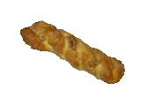
メイプルがパンの上一面についているので、とっても甘いお菓子パンを想像していたんですが、意外と甘さ控えめだったので食べやすかったです。